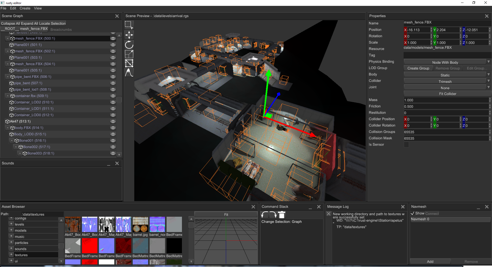

Custom engine
Writing a Custom Game Engine with an Editor in Rust
An engine is the tick. An editor is the same tick with windows on it — world viewer, scene preview, inspector, undo. Fyrox is that cut, in system-level Rust. No garbage collector.

I used Fyrox before Unreal. Fyrox is a 3D engine and a native editor (FyroxEd), both written in Rust. The editor is not a separate product glued on later. It is a game on the same scene graph, the same renderer, the same resource pool — plus dockable windows, gizmos, and a command stack. That is what you are writing: a custom engine with an editor, like that.
Game engine development in Rust is systems programming. You are not writing a gameplay script on top of someone else’s runtime. You are writing the runtime: the event loop, the device, the scene memory, the command buffer, the present — and then the editor that authors that scene. Same class of work as C and C++. The compiler proves the memory story before the frame runs. There is no garbage collector. Each node, each swapchain image, each inspector widget has one owner.
The editor is a game
FyroxEd is built with Fyrox. Same Scene, same renderer,
extra nodes for gizmos and an editor camera, extra windows for
authors. Play mode runs the game in a separate process so
a crash does not take the editor with it. Copy that split. Do not
begin by forking Unreal, or by wrapping another engine and calling
it yours.
Memory management is the engine
Memory is the argument of the language, and it is the argument of the engine. A C++ engine leaks when a node outlives its mesh, or crashes when a pointer outlives the object. A garbage-collected engine (C#, Java, JavaScript, Go) pauses when the heap is walked mid-frame — or you spend the rest of the project fighting the collector so it does not. Rust makes the story compile.
Each value has one owner. The Engine owns the
Scene. The scene owns every Node. A
Handle is an index into that pool, not a raw
pointer that can dangle. GPU resources follow the same rule:
the device, the queue, the surface, the buffers — drop frees
them. No destructor you forget. No GC scan.
Other code may borrow for a limited time.
tick takes &mut self so scripts
and physics get exclusive write — one writer, no aliasing.
render takes &self so the GPU path
may only read. Lifetimes are the compiler proving those borrows
do not outlive the owner. That is slower to write than a
high-level engine script. It is also why the frame can run next
to the metal — native on the desktop, WebAssembly in a browser —
without a runtime holding your hand.
That split is the engine. Update mutates the world. Draw looks at it. If both happen at once, you have a data race. Rust refuses to compile that. C++ lets you ship it.
// Scene owns every node. Handles are indices, not pointers.
struct Handle(u32);
struct Node {
name: String,
local: [f32; 16],
children: Vec<Handle>,
}
struct Scene {
nodes: Vec<Node>,
}
struct Engine {
scene: Scene,
// gpu: Device + Queue + Surface — also owned here
}
impl Engine {
fn tick(&mut self, dt: f32) {
self.update(dt); // exclusive: scripts, physics
self.render(); // then a shared view for draw
}
fn update(&mut self, dt: f32) {
for node in &mut self.scene.nodes {
node.local[13] += dt; // translate Y
}
}
fn render(&self) {
let _n = self.scene.nodes.len();
// encode commands, present. Drop frees the encoder. No GC.
}
}
fn main() {
let mut engine = Engine {
scene: Scene { nodes: vec![] },
};
engine.tick(1.0 / 60.0);
} // Engine dropped. Scene, Vec, GPU — all freed.How to write the engine and the editor
Runtime first. Editor second. A spinning mesh with a camera you own is already an engine. The windows in the screenshot come after the scene can save. Fyrox’s public source is a map of that cut, not a product to clone: fyrox.rs · github.com/FyroxEngine/Fyrox · FyroxEd overview. Copy the architecture. Name the crate yours.
Start small. cargo new my-engine. A window that
closes. A surface that clears a color. A triangle, then a cube with
a camera you own. Then the pool of handles. Then a dt tick that
spins the cube. Then load an OBJ. Then save the scene to a file.
Then a second binary: walk the graph into a list, pick a handle,
show its transform, draw a gizmo. That list is the World Viewer.
That panel is the Inspector. Those two plus the viewport are already
an editor. Docking, prefabs, and play-in-editor come after that
loop is honest. Fyrox took years of this. Do not begin by rewriting
the whole of FyroxEd.
Crate map
One crate until it hurts. Then a workspace so the editor and the runtime stay two binaries on one Scene. Each crate owns one job. The engine crate is glue — the tick — not magic.
my-engine/
Cargo.toml # [workspace] members
crates/
core/ # math, pool of handles, uuid
graph/ # scene nodes, transforms, cameras
render/ # wgpu device, pipelines, present
resource/ # load meshes, textures, scenes
engine/ # the tick — glue, not magic
editor/ # FyroxEd-shaped: viewer, inspector, gizmos
README.md
LICENSE # MIT OR Apache-2.0, like Rust itself
.gitignore # /target, *.pdbPush it to GitHub
A crate that only lives on your disk is a sketch. GitHub is how it
becomes a project other people can clone, compile, and fork. Install
Rust from
rustup.rs
so cargo --version prints. Install
GitHub CLI
if you want gh repo create in one step.
-
Scaffold:
cargo new my-engine --lib. Split into the workspace above when the first module is no longer a sketch. -
Keep build junk out of git. Cargo already writes a
.gitignorewith/target. Add*.pdbon Windows. -
Write
README.md— what it is, how tocargo run -p editor, what GPU it needs. AddLICENSE. MIT OR Apache-2.0 is the Rust default. -
Commit locally, then publish.
ghcreates the empty repo and pushes in one command. Without it, create the repo on github.com and add the remote yourself.
# After cargo new my-engine --lib, and a README + LICENSE
git init
git add README.md LICENSE Cargo.toml src .gitignore
git commit -m "Initial engine crate"
# GitHub CLI — public repo, this folder, push
gh repo create my-engine --public --source=. --remote=origin --push
# Without gh:
# git remote add origin git@github.com:YOU/my-engine.git
# git branch -M main
# git push -u origin main
Optional next: a GitHub Action that runs cargo test on
every push. Optional later: compile a wasm demo and park it on GitHub
Pages — the same way oTTeCAD sits on this site. The modeler below is
that discipline applied to mesh topology instead of a scene graph.
Rust
Writing my own 3D modeler
I am building oTTeCAD in Rust system-level code — mesh topology, GPU viewport, tools, and undo I own. Not a plugin, and not a script on top of someone else's editor. The same workbench compiles to WebAssembly and runs here.
This is the hard path. System-level Rust sits next to C and C++: you talk to the GPU, lay out bytes, and keep a mesh alive without a runtime holding your hand. There is no garbage collector. If a vertex buffer, an undo stack, or a selection set is allocated, I own it until it is dropped. The borrow checker will not compile until that story is true — no dangling pointers, no use-after-free, no two writers on the same memory.
Memory management is the argument of the language. Each value has one owner. Other code may borrow it for a limited time. Lifetimes are the compiler proving those borrows do not outlive the owner. That is slower to write than Python, JavaScript, or a high-level engine script. It is also why this editor can run next to the metal — native on the desktop, WebAssembly here — without leaking, and without a GC pause walking the heap.
// Mesh owns the vertex buffer. Drop frees it — no garbage collector.
struct Mesh {
verts: Vec<[f32; 3]>,
}
fn translate(mesh: &mut Mesh) {
// Exclusive borrow: only this function may write.
for v in &mut mesh.verts {
v[1] += 1.0;
}
} // &mut ends — owner may use mesh again.
fn count(mesh: &Mesh) -> usize {
mesh.verts.len() // shared borrow: readers, no writers
}
fn consume(mesh: Mesh) {
let _n = mesh.verts.len();
} // Mesh dropped here. Vec frees the heap. No GC scan.
fn main() {
let mut mesh = Mesh {
verts: vec![[0.0; 3]; 8],
};
translate(&mut mesh);
assert_eq!(count(&mesh), 8);
consume(mesh); // ownership moves
// count(&mesh); // does not compile
}oTTeCAD is a desktop modeler. Open this page on a computer with WebGPU or WebGL2 (Chrome, Edge, or recent Firefox).
oTTeCAD
Loading the editor
Rust + wgpu, compiled to WebAssembly. First load can take a moment.